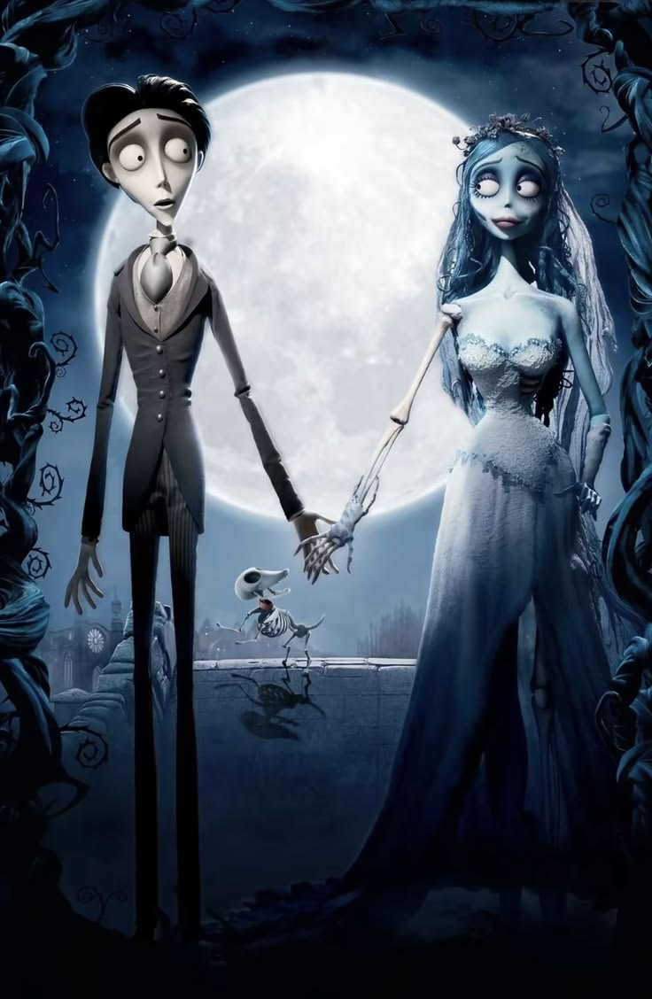

Capítulo único
Un pequeño cuento
✦
Había una vez una historia que no sabía que lo era. Empezó sin ruido, con una conversación cualquiera, en una época en la que todo se sentía nuevo y nadie sospechaba que algunos nombres se quedan.
Con el tiempo se descubren cosas pequeñas: una manera de reír, lo que a alguien le gusta, lo que le importa, lo que le da miedo. Y un día te das cuenta de que prestabas atención sin darte cuenta, porque esa persona importaba.
Hay personas que pasan por la vida como una brisa. Y hay otras que, sin hacer nada extraordinario, se vuelven el lugar al que uno quiere volver.
Este cuento todavía se está escribiendo.
Y tú estás en él.